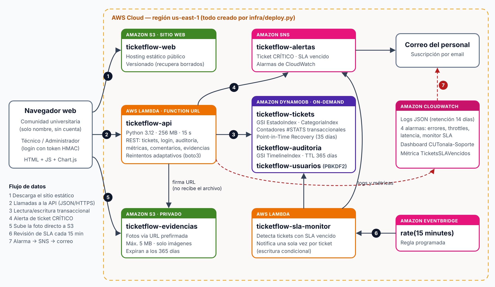

| Integrantes | [Nombre completo — código] [Nombre completo — código] [Nombre completo — código] |
| Profesor(a) | [Nombre del profesor] |
| Repositorio | github.com/bob11jake/cutonala-soporte-serverless |
| Fecha | Noviembre de 2026 |
Problema. En el campus, los reportes de fallas (cortes de luz, fugas de agua, incidentes de seguridad, aulas dañadas o caídas de red) se hacen por mensajes, llamadas o de palabra. No hay registro, no se sabe quién atiende cada caso ni cuánto tarda, y las emergencias se mezclan con solicitudes menores.
Solución. CUTonala Soporte es una aplicación web donde cualquier miembro de la comunidad reporta una incidencia con solo escribir su nombre (opcionalmente con una foto), y el personal técnico la atiende siguiendo un flujo con tiempos de respuesta comprometidos (SLA) según la prioridad. Toda la solución corre en AWS sin servidores que administrar y se construye completa con un script de Python.
| Prioridad | Tiempo máximo | Ejemplo |
|---|---|---|
| CRÍTICA | 2 horas | Agresión en explanada, corte total de energía |
| ALTA | 8 horas | Fuga de agua, puerta de emergencia trabada |
| MEDIA | 24 horas | Luminarias fundidas, bebederos sin agua |
| BAJA | 72 horas | Proyector que no detecta HDMI |
| Parte | Contenido | Líneas |
|---|---|---|
| backend/ | API REST, monitor de SLA, autenticación, acceso a datos, S3 y SNS (7 módulos) | ≈ 980 |
| frontend/ | Interfaz web, cliente HTTP con reintentos, gráficas y estilos | ≈ 1 230 |
| infra/ | Despliegue, estado y destrucción de 6 servicios de AWS | ≈ 700 |
| tests/ | Pruebas pytest, pruebas de fallas, datos demo y servidor local | ≈ 870 |

index.html, JavaScript y CSS desde el bucket S3 configurado como sitio web.ticketflow-api. El token del personal viaja en el encabezado Authorization. Si la API responde 5xx o 429, el cliente reintenta con espera exponencial.#STATS; las listas se obtienen con índices secundarios (nunca recorriendo toda la tabla).ticketflow-sla-monitor, que busca tickets activos vencidos, los marca con escritura condicional y envía un resumen por SNS.| Servicio | Recurso | Función |
|---|---|---|
| Amazon S3 | ticketflow-web-<cuenta> | Hosting del frontend; versionado para recuperar archivos borrados. |
| Amazon S3 | ticketflow-evidencias-<cuenta> | Fotos privadas; CORS para subida directa; expiración a 365 días. |
| AWS Lambda | ticketflow-api | API REST con 11 rutas; validación, autorización por rol y manejo de errores. |
| AWS Lambda | ticketflow-sla-monitor | Tarea programada de SLA; publica la métrica TicketsSLAVencidos. |
| Amazon DynamoDB | ticketflow-tickets | Tickets, historial, comentarios y evidencias. GSI por estado y por categoría. PITR. |
| Amazon DynamoDB | ticketflow-auditoria | Bitácora ordenada por fecha (GSI) con borrado automático por TTL. |
| Amazon DynamoDB | ticketflow-usuarios | Personal con hash PBKDF2, intentos fallidos y bloqueo temporal. |
| Amazon SNS | ticketflow-alertas | Correos de tickets críticos, SLA vencidos y alarmas. |
| Amazon EventBridge | ticketflow-sla-cada-15-min | Regla programada que dispara el monitor de SLA. |
| Amazon CloudWatch | Logs, 4 alarmas, dashboard | Observabilidad y avisos automáticos. |
| Método y ruta | Acceso | Descripción |
|---|---|---|
GET /health | Público | Estado del servicio y latencia de DynamoDB |
POST /auth/login | Público | Login del personal; devuelve token de 8 h |
GET /tickets | Público | Lista (filtros ?estado= o ?categoria=) |
POST /tickets | Público con nombre | Crea ticket y calcula su SLA |
PUT /tickets | TÉCNICO, ADMIN | Cambia estado (solo transiciones válidas) |
DELETE /tickets?ticket_id= | ADMIN | Elimina el ticket y sus fotos |
POST /tickets/comentarios | Público con nombre | Agrega comentario |
POST /tickets/evidencia y /confirmar | Público con nombre | Subida de foto en dos pasos |
GET /metricas, GET /auditoria | TÉCNICO, ADMIN | Contadores globales y bitácora |
Toda la infraestructura se crea con infra/deploy.py (Python + boto3). No se usa la consola web de AWS en ningún paso. El script es idempotente: si un recurso ya existe lo actualiza, así que puede ejecutarse cuantas veces sea necesario.
LabRole). En otra cuenta, define la variable TICKETFLOW_ROLE con el nombre de un rol para Lambda.git clone https://github.com/bob11jake/cutonala-soporte-serverless.git cd cutonala-soporte-serverless
python3 -m venv .venv source .venv/bin/activate pip install -r requirements.txt
py -m venv .venv .venv\Scripts\Activate.ps1 pip install -r requirements.txt
Si PowerShell bloquea la activación: Set-ExecutionPolicy -Scope CurrentUser RemoteSigned. En PyCharm, selecciona .venv como intérprete del proyecto para que su terminal lo active sola.
[default], aws_access_key_id, aws_secret_access_key, aws_session_token).mkdir -p ~/.aws open -e ~/.aws/credentials # macOS
mkdir $HOME\.aws -Force notepad $HOME\.aws\credentials # Windows
sts:GetCallerIdentity. Las credenciales caducan al terminar la sesión del laboratorio; si aparece ExpiredToken, vuelve a copiarlas.python infra/deploy.py --email correo_del_equipo@ejemplo.com
El script ejecuta 9 etapas (en nuestra cuenta tardó 612 s, la mayor parte creando el índice de la auditoría): verifica credenciales, crea el topic SNS (y la suscripción), las 3 tablas con índices, PITR y TTL, los usuarios iniciales, el bucket de evidencias, las 2 Lambdas con su Function URL, la regla de EventBridge, las alarmas y el dashboard, y publica el frontend. Al final imprime la URL de la aplicación. Confirma el correo de suscripción que envía AWS para recibir alertas.
python tests/seed_and_resilience.py # borra los tickets y carga 8 de ejemplo en distintos estados python infra/status.py # estado de cada recurso y prueba de /health
Usuarios del personal: admin@ticketflow.edu / Admin123! y soporte@ticketflow.edu / Soporte123! (las contraseñas se guardan con hash; se recomienda cambiarlas en producción).
python tests/chaos.py # 7 escenarios de falla real (~4 min) → docs/resultados_resiliencia.md pip install -r requirements-dev.txt python -m pytest -q # 22 pruebas con AWS simulado (no usa la cuenta)
python infra/destroy.py # pide confirmación; borra los 6 servicios y sus datos
| Síntoma | Causa y solución |
|---|---|
command not found: pip | El entorno virtual no está activo: source .venv/bin/activate. |
ExpiredToken / InvalidClientTokenId | Terminó la sesión del laboratorio: copia de nuevo las credenciales. |
CERTIFICATE_VERIFY_FAILED (macOS) | El Python de python.org no trae certificados; el proyecto usa certifi (incluido en requirements.txt). |
| La página dice “Sin conexión” | python infra/status.py; si la API no responde, vuelve a ejecutar deploy.py. |
El criterio principal fue que el sistema no cueste nada mientras no se usa (el campus tiene picos en horario de clases y casi nada de noche, fines de semana y vacaciones), que no haya servidores que parchar y que funcione dentro de las restricciones de AWS Academy.
| Necesidad | Elegido | Alternativas | Por qué |
|---|---|---|---|
| Cómputo de la API | AWS Lambda | EC2, ECS/Fargate, Elastic Beanstalk | Se paga por petición y milisegundo; escala de 0 a cientos de instancias sin configuración. Un EC2 cuesta lo mismo a las 3 a. m. que en horas pico y requiere parches y monitoreo del sistema operativo. |
| Punto de entrada HTTP | Lambda Function URL | Amazon API Gateway | HTTPS y CORS sin costo adicional y con menos configuración. API Gateway agregaría throttling por cliente, llaves de API y caché, que este volumen no necesita (y cobra por millón de llamadas). |
| Base de datos | Amazon DynamoDB (on-demand) | Amazon RDS (MySQL/PostgreSQL), Aurora Serverless | Sin instancia encendida 24/7, latencia de milisegundos, cifrado y réplica en 3 zonas incluidos, transacciones, escrituras condicionales, PITR y TTL. RDS más pequeño cuesta ≈ 15 USD/mes aunque nadie lo use y requiere VPC. |
| Frontend | Amazon S3 (sitio estático) | Amplify Hosting, EC2 con Nginx | La interfaz es HTML/JS estático: S3 lo sirve por centavos y con versionado. CloudFront se descartó porque Learner Lab lo limita; sería la mejora para HTTPS y caché global. |
| Fotos | S3 privado + URL prefirmada | Guardar en DynamoDB, enviar por la Lambda | DynamoDB limita los items a 400 KB y la Lambda a 6 MB por petición. Con URL prefirmada el archivo no pasa por la Lambda (menos costo y tiempo) y el bucket nunca es público. |
| Notificaciones | Amazon SNS | Amazon SES, servicio externo | Se integra directo con alarmas de CloudWatch y no requiere verificar dominios (SES sí, y Learner Lab lo restringe). Admite agregar SMS o más suscriptores sin cambiar código. |
| Tareas programadas | Amazon EventBridge | Cron en un EC2 | Regla administrada sin servidor; si una ejecución falla, la siguiente vuelve a revisar todo (la marca condicional evita avisos duplicados). |
| Autenticación | PBKDF2 + token HMAC propio | Amazon Cognito | Cognito es la opción para producción (MFA, recuperación de contraseña), pero Learner Lab restringe su uso. Se implementó lo esencial con buenas prácticas: hash con sal y 120 000 iteraciones, secreto aleatorio por despliegue, expiración y bloqueo por fuerza bruta. |
| Infraestructura como código | Python + boto3 | CloudFormation, Terraform, AWS CDK | Lo pide el proyecto (shell o Python) y permite lógica propia: migrar tablas de despliegues anteriores, recalcular contadores y mostrar el progreso. Desventaja: el estado y la limpieza se programan a mano. |
LabRole y servicios bloqueados limitan algunas decisiones.Para cada componente se analizó qué pasaría si falla y cómo lo maneja el sistema. Las fallas se simulan de verdad sobre los recursos desplegados con python tests/chaos.py: el script inyecta la falla, mide la respuesta, restaura el componente (siempre, aunque la prueba falle) y mide el tiempo de recuperación.
| # | Si falla… | ¿Qué pasaría sin protección? | Cómo se simula | Cómo lo maneja el sistema |
|---|---|---|---|---|
| 1 | Pico de demanda | Saturación, tiempos de espera y errores. | 200 peticiones simultáneas con 25 hilos. | Lambda crea más instancias automáticamente; DynamoDB on-demand absorbe la carga; boto3 reintenta con control adaptativo. |
| 2 | AWS Lambda (sin capacidad) | La página se queda “cargando” o muestra errores genéricos. | Concurrencia reservada de la función en 0 (rechaza todas las invocaciones). | El frontend reintenta con espera exponencial y muestra “Servicio degradado / Sin conexión” sin perder lo que el usuario escribió; la alarma de throttles avisa por correo. Al restaurar, se recupera sola. |
| 3 | Amazon DynamoDB | Error 500 con detalles internos o datos a medias. | Se cambia la variable de entorno para que la API apunte a una tabla inexistente. | Respuesta 503 con mensaje claro y sin detalles internos; /health devuelve 503; no se escriben datos parciales (transacciones). La alarma de errores avisa. |
| 4 | Amazon SNS | No se podría registrar un ticket crítico porque falla el aviso. | Se apunta la API a un topic inexistente y se crea un ticket CRÍTICO. | Degradación elegante: el ticket se guarda (201) y solo se pierde el correo (alerta_enviada=false, registrado en logs). Lo mismo con la bitácora de auditoría. |
| 5 | Amazon S3 (sitio) | Sitio caído hasta volver a desplegar. | Se borra index.html del bucket. | El versionado conserva la versión anterior: se elimina el delete marker y el sitio vuelve en segundos, sin redeploy. deploy.py --solo-frontend es el plan B. |
| 6 | Entradas maliciosas | Caídas por datos inesperados, acceso no autorizado o robo de cuentas. | JSON roto, cuerpo de 1 MB, tipos incorrectos, token falsificado, inyección en filtros y 5 contraseñas erróneas. | Siempre 4xx (nunca 5xx); firma HMAC verificada en tiempo constante; bloqueo de 15 min tras 5 fallos (429); todo texto se escapa en el navegador (anti-XSS). |
| 7 | Pérdida de datos | Un borrado accidental sería irreversible. | Restauración real con Point-in-Time Recovery a una tabla nueva (--restaurar). | PITR permite volver a cualquier segundo de los últimos 35 días; el script compara el número de items y elimina la tabla temporal. |
| 8 | CDN de Chart.js | La página no carga si el script externo se cuelga. | Se bloqueó el CDN en la prueba del navegador. | El script se carga de forma asíncrona: la app funciona sin gráficas y muestra un aviso. Verificado. |
| 9 | Dos técnicos a la vez | Un cambio pisa al otro y los contadores se desajustan. | Prueba automatizada con escritura concurrente. | Escritura condicional sobre el estado anterior: solo uno gana, el otro recibe 409 y recarga. Verificado. |
Pruebas automatizadas (pytest + moto): 22 de 22 superadas, incluyendo DynamoDB caído (503 controlado), SNS caído, auditoría caída, error inesperado (500 sin detalles), concurrencia, bloqueo por fuerza bruta, tokens alterados/expirados y migración de un despliegue anterior.
Prueba de navegador (Playwright): flujo completo de alumno y administrador. Un título con <img onerror=alert()> se muestra como texto y no se ejecuta; la foto se sube y se visualiza; la app sigue operando sin Chart.js.
Escenarios sobre AWS real (tests/chaos.py, 25 de noviembre de 2026, us-east-1): 7 de 7 superados.
| # | Escenario | Observado | Recuperación | Resultado |
|---|---|---|---|---|
| 1 | 200 peticiones simultáneas | 200/200 respuestas HTTP 200; p50 448 ms, p95 550 ms, máx. 930 ms | N/A | Superada |
| 2 | Lambda sin capacidad | HTTP 429 ReservedFunctionConcurrentInvocationLimitExceeded | 0.3 s | Superada |
| 3 | DynamoDB no disponible | GET, POST y /health → 503 con mensaje controlado; sin datos parciales | 1.2 s | Superada |
| 4 | SNS no disponible | Ticket CRÍTICO creado (HTTP 201) con alerta_enviada=false | Inmediata | Superada |
| 5 | index.html borrado | Antes 200 → durante 404 → después 200 (versionado) | 0.5 s | Superada |
| 6 | Entradas maliciosas y fuerza bruta | 400, 400, 400, 401, 403, 400 y bloqueo 429; ningún 5xx | N/A | Superada |
| 7 | Point-in-Time Recovery | PITR activo en la tabla de tickets (la restauración completa se ejecuta con --restaurar) | — | Superada |
index.html de forma permanente y el sitio quedó caído hasta volver a desplegar. Se corrigió el script: ahora verifica que la API desplegada sea la versión actual y no inyecta la falla si el bucket no tiene versionado. Esto mostró por qué el versionado de S3 es necesario.Costo real durante el desarrollo: el proyecto se desplegó en AWS Academy Learner Lab, cuyo crédito cubre el consumo. El panel del laboratorio mostró un gasto de [$ X.XX] al cierre del proyecto (captura en el anexo). La mayor parte del tiempo se usó el modo local (tests/servidor_local.py), que no genera costos.
Escenario de uso supuesto para el CUTonalá: 3 000 tickets al mes, 1 500 fotos al mes (≈ 300 KB cada una tras la compresión en el navegador), 20 000 visitas al sitio y ≈ 500 000 llamadas a la API al mes (incluye el refresco automático cada 60 s de 10 técnicos durante su jornada). Precios de lista de us-east-1, sin capa gratuita.
| Servicio | Concepto | Cálculo mensual | USD/mes |
|---|---|---|---|
| AWS Lambda | Peticiones | 500 000 × $0.20 / millón | 0.10 |
| Cómputo | API: 500 000 × 0.15 s × 0.25 GB = 18 750 GB-s; monitor: 720 GB-s; × $0.0000166667 | 0.32 | |
| Amazon DynamoDB | Lecturas | ≈ 15.5 M unidades de lectura × $0.125 / millón | 1.94 |
| Escrituras | ≈ 180 000 unidades (tickets, transacciones, comentarios, auditoría) × $0.625 / millón | 0.11 | |
| Almacenamiento + PITR | ≈ 0.5 GB × ($0.25 + $0.20) | 0.23 | |
| Amazon S3 | Sitio web | 120 000 GET ($0.05) + 6 GB de transferencia × $0.09 ($0.54) | 0.59 |
| Evidencias | ≈ 2.7 GB promedio × $0.023 ($0.06) + peticiones ($0.02) + 9 GB de transferencia ($0.81) | 0.89 | |
| Amazon SNS | Correos | ≈ 1 000 correos × $2.00 / 100 000 | 0.02 |
| Amazon EventBridge | Regla programada | 2 880 invocaciones al mes | 0.00 |
| Amazon CloudWatch | Dashboard | 1 dashboard × $3.00 | 3.00 |
| Alarmas y métrica | 4 alarmas × $0.10 + 1 métrica personalizada × $0.30 | 0.70 | |
| Logs | ≈ 1 GB ingerido × $0.50 (retención de 14 días) | 0.50 | |
| Total mensual estimado | ≈ 8.40 | ||
| Total anual estimado (12 meses) | ≈ 101 | ||
Lambda (1 M de peticiones y 400 000 GB-s), SNS (1 000 correos), CloudWatch (3 dashboards, 10 alarmas, 10 métricas, 5 GB de logs) y los primeros 100 GB de transferencia son gratuitos cada mes. El costo bajaría a ≈ 2.40 USD/mes (≈ 29 USD/año), casi todo DynamoDB.
EC2 t3.small 24/7 (≈ $15.2) + RDS db.t3.micro (≈ $14.7 con 20 GB) + Application Load Balancer (≈ $22) + EBS (≈ $1.6) ≈ 53 USD/mes (≈ 645 USD/año), sin alta disponibilidad. La opción serverless es ≈ 6 veces más barata.
| Riesgo | Medida implementada |
|---|---|
| Robo de contraseñas | Hash PBKDF2-SHA256 con sal aleatoria y 120 000 iteraciones; nunca se guardan en texto plano. |
| Fuerza bruta | Bloqueo de 15 minutos tras 5 intentos fallidos; los intentos quedan en la bitácora. |
| Suplantación | Tokens firmados con HMAC-SHA256, secreto aleatorio por despliegue, expiración de 8 h y verificación en tiempo constante. |
| Escalada de privilegios | Control de acceso por rol (RBAC) en el servidor en cada ruta; la interfaz solo oculta botones. |
| XSS | Todo texto del usuario se escapa antes de insertarlo en la página; eventos por delegación, sin onclick con datos. |
| Fotos privadas | Bucket con bloqueo de acceso público; URLs temporales; solo imágenes de hasta 5 MB (validado por S3). |
| Fuga de información | Errores sin trazas internas; logs estructurados solo con método, ruta, estado y duración. |
| Secretos en el repositorio | No hay Account ID, llaves ni secretos en el código; state.json y config.js están en .gitignore. |
| Semana | Actividades |
|---|---|
| 1 | Análisis del problema en el campus, requisitos, prioridades y SLA, selección de servicios, modelo de datos en DynamoDB (llaves, índices, contadores). |
| 2 | API en Lambda (rutas, validación, roles), autenticación, script de despliegue con boto3, primera versión del frontend. |
| 3 | Evidencias con S3 y URLs prefirmadas, alertas SNS, monitor de SLA con EventBridge, gráficas, auditoría y exportación CSV. |
| 4 | Alarmas y dashboard, endurecimiento de seguridad, pruebas automatizadas y de fallas, análisis de costos, documentación y presentación. |
Se construyó una aplicación web completa que resuelve un problema real del campus usando seis servicios administrados de AWS, desplegada en su totalidad con código. La arquitectura serverless resultó adecuada para un uso con picos y periodos inactivos: el costo estimado es de alrededor de 100 USD al año sin capa gratuita (frente a ≈ 645 USD de una arquitectura con servidores), con alta disponibilidad incluida. Las pruebas de resistencia muestran que la falla de cualquier componente produce una respuesta controlada y que el sistema se recupera solo al restaurarlo. El aprendizaje principal fue diseñar el modelo de datos y los patrones de resiliencia (transacciones, escrituras condicionales, reintentos y degradación elegante) desde el inicio, no al final.